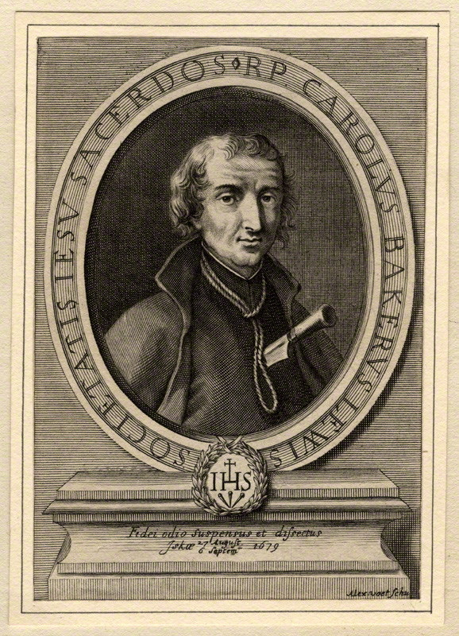

Mučenici iz Engleske i Walesa (10 svetaca)
Svećenik
Sv. David Lewis
1616. – 1679.
Velški isusovac desetljećima je obilazio katoličke obitelji južnoga Walesa i dijelio sakramente. Zbog brige za potrebite nazivali su ga ocem siromašnih; njegova skrovita služba završila je mučeništvom u Usku.

Izvor slike
- Spomendan
- 1. prosinca
- Zaštitništvo
- Nije navedeno u izvoru
- Životni vijek
- 1616. – 1679.
- Djelovanje
- Misije i evangelizacija · Siromašni i isključeni · Obraćenje i novi počeci · Progoni i progonstvo · Mučeništvo
- Razdoblje
- 17. stoljeće
- Rođenje — dostupni podaci
- 1616.; dan i mjesec nisu potvrđeni u provjerenom izvoru.
- Mjesto rođenja
- Wales
- Datum smrti
- 22.08.1679.
- Mjesto smrti/mučeništva
- Usk, Monmouthshire, Wales
- Okolnosti smrti/mučeništva
- Obješen zbog katoličkoga svećeništva i djelovanja.
- Uloga
- Svećenik
- Mučenik
- Da
- Ostale oznake
- Poznat kao Otac siromaha; misionar u južnom Walesu
- Pripadnost
- Isusovac
- Drugi oblici imena
- David · Charles Baker · Tad y Tlodion
Životopis
David Lewis bio je velški isusovac koji je više od trideset godina obilazio katoličke obitelji južnoga Walesa, propovijedao i dijelio sakramente. Vjernici su ga poznavali i pod imenom Charles Baker, kojim se služio radi zaštite u vrijeme progona. Zbog njegove brige za siromašne zvali su ga Tad y Tlodion, otac siromašnih. Njegova je služba povezivala skrovita mjesta okupljanja, domove i ljude koji nisu mogli slobodno živjeti svoju vjeru. Kada je 1678. izmišljena zavjera izazvala nov val progona katolika, uhićen je i on. Umro je kao mučenik u Usku 27. kolovoza 1679.
Rođen je u Abergavennyju, u Monmouthshireu, oko 1616. ili 1617. godine, kao najmlađe od devetero djece Morgana Lewisa i Margaret Pritchard. Otac je bio anglikanski svećenik i školski ravnatelj, a majka katolkinja. David je odgojen u protestantskoj vjeri, u obitelji u kojoj su se susretale dvije vjerske pripadnosti. Školovanje je započeo u rodnome kraju. Kao mladić otišao je u Pariz i ondje prihvatio katoličku vjeru. Taj ga je korak poslije doveo do svećeničkoga poziva i dugoga služenja katolicima u domovini.
Godine 1638. stupio je u Engleski kolegij u Rimu. Ondje se pripravljao za svećeništvo zajedno s drugim mladićima koji su se trebali vratiti u zemlju u kojoj je katolička služba bila opasna. Uzeo je ime Charles Baker, jedno od zaštitnih imena kojima su se katolički svećenici služili da bi prikrili identitet pred progoniteljima. U Rimu je 20. srpnja 1642. zaređen za svećenika. Dana 19. travnja 1645. stupio je u Družbu Isusovu. Svećeničko je ređenje, dakle, prethodilo njegovu ulasku u isusovački red, u kojem će provesti ostatak života.
U prvim je godinama službe bio povezan i s rimskim kolegijem i s misijom u domovini. Nakon kraćega djelovanja u Walesu ponovno je pozvan u Rim, gdje je pomagao u duhovnom odgoju sjemeništaraca. Bio je ispovjednik i duhovnik budućih svećenika. Služba u kolegiju povezala ga je s mladićima koji su se pripremali za isti zahtjevni put koji je i sam prihvatio. Godine 1648. vratio se u Wales. Otada je ondje ostao više od trideset godina, sve do uhićenja.
Njegovo je misijsko područje obuhvaćalo južni Wales i Monmouthshire. U Cwmu je djelovala isusovačka misija svetoga Franje Ksaverskoga, kojoj je Lewis bio poglavar. Oslanjala se na mrežu katoličkih kućanstava i ljudi spremnih primiti svećenika. Propovijedao je i na velškom i na engleskom jeziku. Putovao je između zajednica, često djelujući noću i skrovito. Takav način života zahtijevao je pomoć vjernika koji su mu otvarali domove i omogućivali susrete s ljudima. U tim je okolnostima njegova dugogodišnja nazočnost bila oslonac katolicima toga kraja.
Središte njegove službe bili su navještaj Božje riječi, misa, ispovijed i dijeljenje sakramenata. Upravo su o tim činima poslije na sudu svjedočili ljudi koji su ga vidjeli kako obavlja svećeničke dužnosti. Ono zbog čega su ga vjernici tražili postalo je osnovom optužbe. Njegova skrb obuhvaćala je i siromašne i nevoljnike, po čemu je ostao zapamćen među ljudima kojima je služio. Velški nadimak otac siromašnih izražavao je privrženost zajednice svećeniku koji joj je tijekom desetljeća bio blizak.
Katolici su živjeli pod zakonima koji su ograničavali njihovo bogoslužje, a svećenike izlagali zatvoru i smrti. Primjena tih zakona nije uvijek bila jednako stroga, pa je misijski rad mogao trajati godinama. Ipak, promjena političkoga ozračja mogla je u kratkom vremenu ugroziti čitavu zajednicu. To se dogodilo 1678., kada je Titus Oates iznio lažne tvrdnje o katoličkoj zavjeri protiv kralja Karla II. Izmišljena urota pokrenula je strah, istrage i progone. Katolički svećenici, među njima i oni koji su odavno bili poznati svojim susjedima, postali su mete novih uhićenja.
Lewis je uhićen u studenome 1678. u Llantarnamu. Uhićenju je prethodila izdaja ljudi koji su ga poznavali, a u progonu je važnu ulogu imao mjesni dužnosnik John Arnold. Nakon dugih godina služenja u istom kraju Lewis se našao u tamnici i pred sudom. U proljeće 1679. izveden je pred sud. Optužbe su povezivale njegovo ime s navodnom urotom, ali njegovo sudjelovanje u zavjeri nije dokazano. Svjedoci su, međutim, potvrđivali da je slavio misu i obavljao druge svećeničke službe. Prema tadašnjim zakonima to je bilo dovoljno za smrtnu presudu.
Nakon osude odveden je u London, u zatvor Newgate, zajedno s ostarjelim svećenikom Johnom Kembleom. Ondje su ga ponovno ispitivali o navodnoj uroti. Od njega se tražilo da pruži iskaze protiv drugih optuženika, a prema sačuvanim izvještajima nuđeno mu je i da odricanjem od katoličke vjere izbjegne smrt. Nije pristao. U kasnijem je iskazu obrazložio da nije mogao otkriti zavjeru za koju nije znao, a da bi odricanjem od vjere povrijedio savjest. Nakon ispitivanja vraćen je u Wales radi izvršenja presude.
Pogubljenje je određeno u Usku. Prema izvještajima o njegovim posljednjim trenutcima, pred okupljenim je ljudima ponovno potvrdio svoju katoličku vjeru i svećeništvo te podsjetio da je služio misu, slušao ispovijedi i dijelio sakramente. Prije smrti kratko se obratio Isusu u molitvi. Dana 27. kolovoza 1679. obješen je, a nakon smrti izvršen je ostatak kazne. Svjedočanstva o poštovanju koje je uživao govore i o ljudima druge vjere koji nisu željeli da se njegovo mučenje produljuje.
Pokopan je u Usku, gdje je njegov grob postao mjestom molitve i hodočašća. U tom se kraju i dalje čuva uspomena na svećenika koji je služio progonjenim katolicima i osobito skrbio za siromašne. Katolička crkva u Usku posvećena je svetomu Davidu Lewisu i svetomu Franji Ksaverskomu. Papa Pio XI. proglasio ga je blaženim 15. prosinca 1929., a papa Pavao VI. svetim 25. listopada 1970., među Četrdeset mučenika Engleske i Walesa. U velškom se crkvenom kalendaru njegov spomendan slavi 26. kolovoza, dan prije obljetnice smrti. Njegovo mučeništvo čuva spomen na vjernost Kristu koja se desetljećima očitovala u propovijedanju, sakramentima i blizini potrebitima.
Pročitaj više na izvornoj stranici ↗